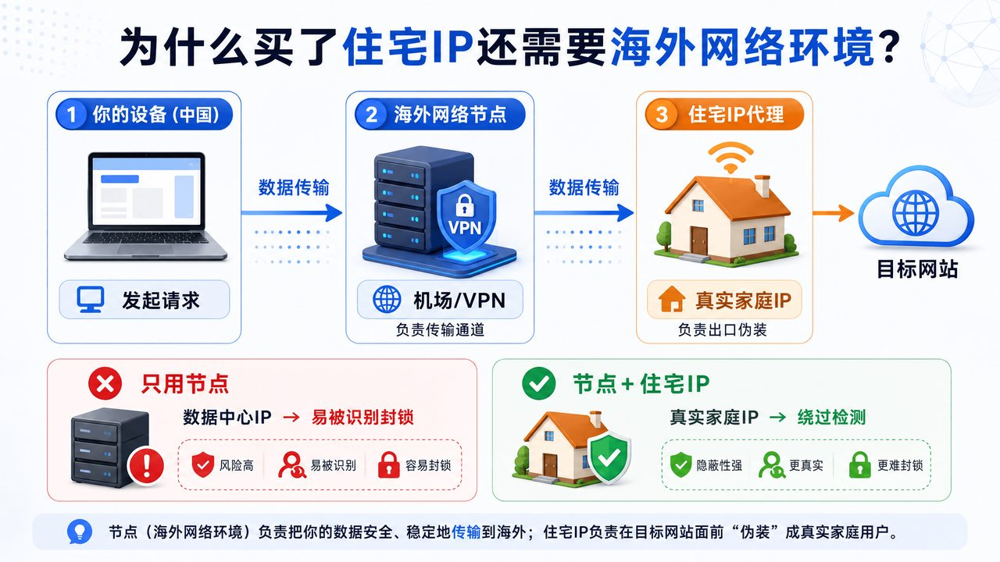
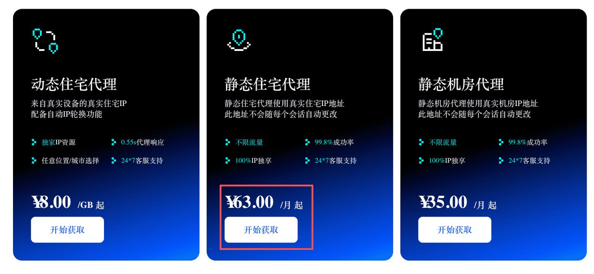
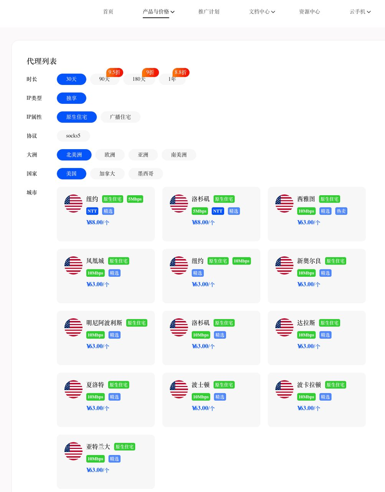
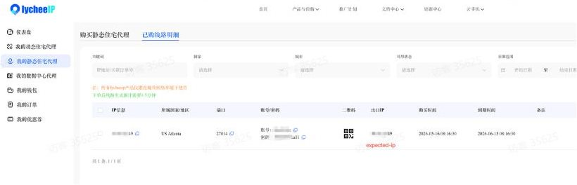
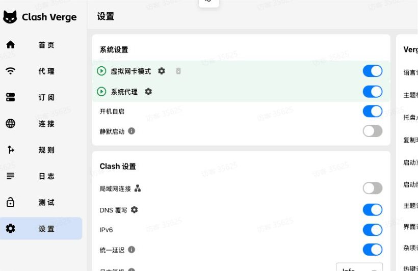

稳定家宽推荐
第一步：点进： https://www.lycheeip.com/home/ip?affId=mkJV6QhMtZ
【一定要先开启自己已有的tz，要留意一下tz套餐是否在有效期内。选择可用的线路，尽量选择新加坡、美国、日本这些线路，开启“规则+tun模式（虚拟网卡模式）”
如果自己没有 t z ，或者感觉自己的 t z 不稳定/不好用，点进该链接注册、安装： https://www.52xcjs.top/auth/register?code=tkAacVJHCliPLOWM （这个t z我用了五年多了，挺稳定的），安装好之后开启tz，选择可用的线路，规则+tun模式（虚拟网卡模式）
注意：这一步所说的 t z ，不是后面要安装的那个住宅 IP 哦，继续往下跟着教程走就好 】
为啥家宽需要一个海外网络环境才行，一图胜千言

第二步：选择静态住宅代理：

按如下配置选择一个美国城市（30天，独享，原生住宅，北美洲，美国）

【如果订单支付页面，出现“中国大陆网络无法直接使用本代理，使用前请先自备境外网络。”这些字，去开启自己已用的 t z 就行】GPT、Gemini 等也可以用这个美区家宽
购买后访问： https://www.lycheeip.com/ip/static/order 查看你的静态 IP

【如需远程安装服务，需支付 300 元 安装服务费哦】
Mac 配置方法：
https://github.com/allentofight/residential-proxy-kit
Mac 用户、Windows用户，如果使用 Clash Verge，请务必保证是如图配置：（这个Clash Verge不是美区住宅 IP 哦，请点进链接看 Mac / Windows 设备配置美区住宅 IP 的具体操作 ）

Windows 配置方法： [该链接的加载速度偶尔会有一点点慢]
https://workdrive.zohopublic.com/writer/open/7j5914e5374ac293b4101913721da6048977e
手机配置：